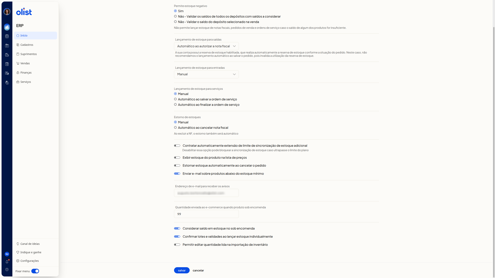

Como configurar o estoque
Descrição
No ERP da Olist, a tela Configurações de estoque reúne como o estoque é lançado, estornado, validado e avisado. Você define estoque negativo, lançamentos, estorno, sincronização, lista de preços, aviso por email, sob encomenda, lotes e validades e importação de inventário.
O caminho é Início > Suprimentos > Configurações > Estoque.
Pré-requisitos
Você precisa estar autenticado no ERP.
Instruções
Nenhuma opção é obrigatória.
Como acessar
-
Acesse Início > Suprimentos > Configurações > Estoque.

-
Localize Salvar e Cancelar no final da tela. Salvar grava a configuração. Não clique em Salvar apenas para consultar.
O que cada opção faz
Estoque negativo
Permite estoque negativo define se o estoque negativo é permitido. Escolha uma opção:
- Sim
- Não - Validar os saldos de todos os depósitos com saldos a considerar
- Não - Validar o saldo do depósito selecionado na venda
O grupo informa que não é permitido lançar estoque de notas fiscais, pedidos de venda e ordens de serviço se o saldo de algum produto for insuficiente.
Lançamento de saídas
Lançamento de estoque para saídas define quando o estoque de saídas é lançado. Escolha uma opção:
- Manual
- Automático ao autorizar a nota fiscal
- Automático ao salvar a nota fiscal
- Automático ao salvar o pedido
- Automático ao marcar pedido como enviado
Com a reserva de estoque habilitada, que reserva o estoque conforme a situação do pedido, não se recomenda Automático ao salvar o pedido. Essa escolha invalida a utilização da reserva de estoque.
Lançamento de entradas
Lançamento de estoque para entradas define quando o estoque de entradas é lançado. Escolha uma opção:
- Manual
- Automático ao autorizar a nota fiscal
- Automático ao salvar a nota fiscal
- Automático ao salvar a ordem de compra
- Automático ao finalizar conferência de compra
Lançamento de serviços
Lançamento de estoque para serviços define o lançamento de estoque para serviços. Escolha uma opção:
- Manual
- Automático ao salvar a ordem de serviço
- Automático ao finalizar a ordem de serviço
Estorno
Estorno de estoques define o estorno de estoques. Escolha Manual ou Automático ao cancelar nota fiscal.
Em Automático ao cancelar nota fiscal, a tela informa que, ao excluir a nota fiscal, o estorno também será automático.
Ligue ou desligue Estornar estoque automaticamente ao cancelar o pedido.
Sincronização de estoque
Ligue ou desligue Contratar automaticamente extensão de limite de sincronização de estoque adicional.
Desabilitar essa opção pode bloquear a sincronização de estoque caso ultrapasse o limite do plano.
Lista de preços
Ligue ou desligue Exibir estoque do produto na lista de preços.
Aviso de estoque mínimo
Ligue ou desligue Enviar e-mail sobre produtos abaixo do estoque mínimo.
Com o aviso em uso, preencha Endereço de e-mail para receber os avisos com um endereço de email.
Sob encomenda
Informe a quantidade numérica em Quantidade enviada ao e-commerce quando produto sob encomenda.
Ligue ou desligue Considerar saldo em estoque no sob encomenda.
Lotes e validades
Ligue ou desligue Confirmar lotes e validades ao lançar estoque individualmente.
Importação de inventário
Ligue ou desligue Permitir editar quantidade lida na importação de inventário.
Ao concluir os ajustes, clique em Salvar para gravar a configuração.
Links relacionados
Se precisar de ajuda com estas configurações, fale com o suporte.